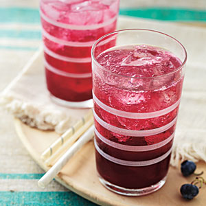

| Blueberry Thrill | |
|---|---|
|  |
1. Place 2 cups blueberries in a large, heavy stainless-steel saucepan; mash with a fork or potato masher. Place over medium-high heat, and cook 3 minutes or until berries begin to release juice. Remove from heat; add gin. Cover and let stand at least for 1 hour or up to overnight. Strain mixture through a sieve into a bowl, pressing berries with the back of a spoon to remove as much juice as possible; discard solids.
2. Combine 3/4 cup water, sugar, and cardamom pods in a small saucepan; bring to a boil. Cook 2 minutes or until sugar dissolves. Cool completely; discard cardamom pods. 3. To serve, add the ice to a cocktail shaker to come halfway up sides of container. Add 1/4 cup blueberry-gin, 1 1/2 tablespoons cardamom syrup, and 1 tablespoon lemon juice; shake until chilled. Strain cocktail into a chilled martini glass. Garnish with additional blueberries, if desired. Serve immediately. Repeat procedure with remaining ingredients. |